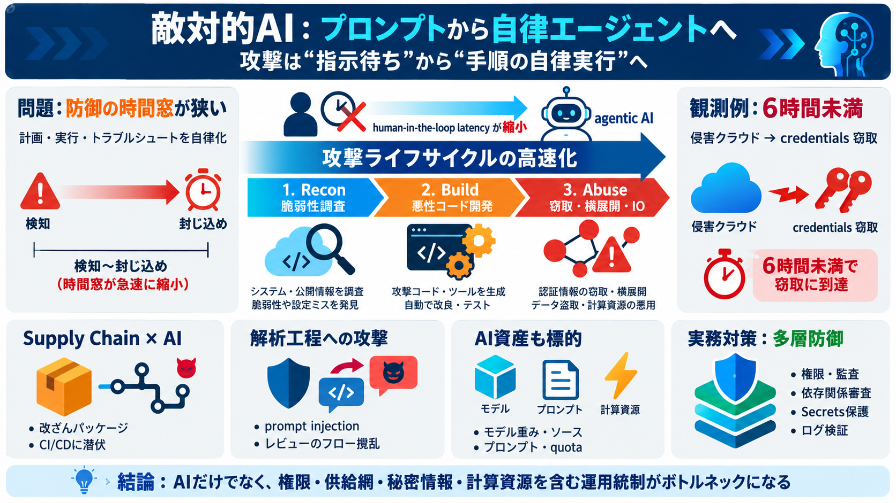

GTIG AI Threat Tracker: From Prompting to Autonomy - Google Cloud
Operations attributed to the financially motivated threat actor UNC6780 (TeamPCP) highlight the growing severity of thre…

Operations attributed to the financially motivated threat actor UNC6780 (TeamPCP) highlight the growing severity of thre…
Stolen credentials from the March Trivy compromise were later used to breach Cisco’s development environment, exfiltrati…
Today we released a report that details these observations and how we’ve taken action, including by disabling associated…
Google is both observing ongoing activity related to the misuse of AI, and taking action based on these continual insigh…
Are guardrails enough to secure AI? .svg) No. Guardrails help, but the report shows they can be bypassed, manipulated,…